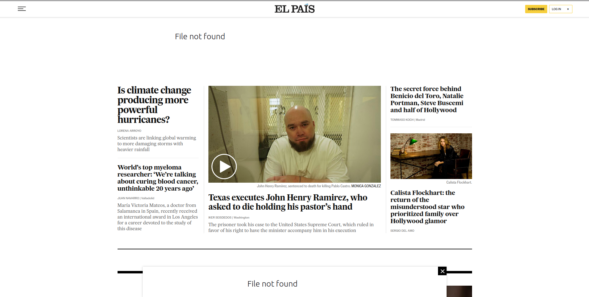
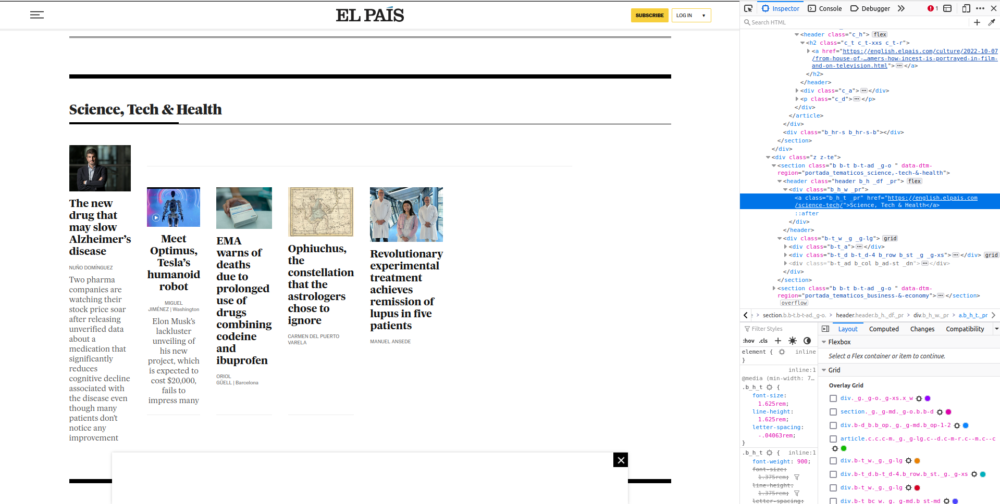
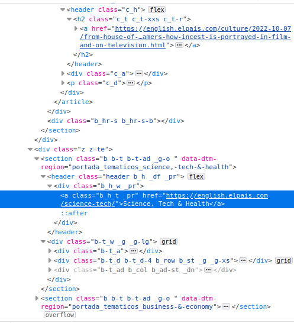

library(xml2)
library(magrittr)
library(scrapex)5 What you need to know about XPath
XPath (XML Path Language) is the language designed to identify the address of one or several tags within an HTML or XML document. With that address, XPath allows us to extract the data under those tags. For example, take a look at the XML below:
<bookshelf>
<dansimmons>
<book>
Hyperion Cantos
</book>
</dansimmons>
</bookshelf>To extract the book ‘Hyperion Cantos’ of Dan Simmons, the simplest XPath you can use is /bookshelf/dansimmons/book. Let’s break that up to understand it better:
- The first node is bookshelf so we start with
/bookshelf. - The child of bookshelf is
<dansimmons>so the XPath becomes/bookshelf/dansimmons/ - The child of
<dansimmons>is<book>so we just add that to our XPath:/bookshelf/dansimmons/book
That doesn’t look so hard, right? The problem is that for all your web scraping needs, having the exact address, node by node, will not be generalizable.
5.2 Filter by attributes
When parsing complicated websites, you’ll need additional flexibility to parse HTML/XML. XPath has a great property that allows picking tags with specific attributes. Let’s update our XML example to include a new author tag <stephenking>, one of its books and some additional attributes for some books:
# Note the new <stephenking> tag with it's book 'The Stand' and all <book> tags have some attributes
raw_xml <- "
<bookshelf>
<authors>
<dansimmons>
<book price='yes' topic='scifi'>
Hyperion Cantos
</book>
<book topic='scifi'>
<release_year>
1996
</release_year>
Endymion
</book>
</dansimmons>
<stephenking>
<book price='yes' topic='horror'>
The Stand
</book>
</stephenking>
</authors>
</bookshelf>"
book_xml <- raw_xml %>% read_xml()The power of XPath comes in when we can filter tags by attributes. Perhaps we’d like to extract all book tags that had a price, regardless of author. Or catch all books of a certain topic. Whenever we want our tags to match a specific attribute we can add two brackets at the end of the tag and match the attribute to what we’re after. Say we wanted to know all Dan Simmons books with a price, how would that XPath look like?
book_xml %>%
xml_find_all("//dansimmons//book[@price='yes']") %>%
xml_text()[1] "\n Hyperion Cantos\n "Our new XPath is saying: find all <book> tags that have an attribute of price set to yes that are descendants (but not necessarily direct child, because of the //) of the <dansimmons> tag. Quite interesting eh? This approach allows us to have a much more flexible language for parsing HTML/XML documents. Everything inside [] serves to add additional filters/criteria that match your XPath. With the help of the and keyword, you can alter the previous XPath to get all books with a price from the topic horror:
book_xml %>%
xml_find_all("//book[@price='yes' and @topic='horror']") %>%
xml_text()[1] "\n The Stand\n "Or grab only the books which have a price attribute (that’s different from having price set to yes or no):
book_xml %>%
xml_find_all("//book[@price]"){xml_nodeset (2)}
[1] <book price="yes" topic="scifi">\n Hyperion Cantos\n </book>
[2] <book price="yes" topic="horror">\n The Stand\n </book>Or find all books which did not have a price:
book_xml %>%
xml_find_all("//book[@price!='yes']"){xml_nodeset (0)}This is correct because there is no attribute of price set to ‘no’. You can also use the keyword or to match certain properties:
book_xml %>%
xml_find_all("//book[@price='yes' or @topic='scifi']") %>%
xml_text()[1] "\n Hyperion Cantos\n "
[2] "\n 1996\n \n Endymion\n "
[3] "\n The Stand\n " XPath has all the goodies to perform basic filtering (and, or, =, !=) but also has additional functions that are useful for filtering. Some of the most common ones include:
contains()starts-with()text()not()count()
How do we use them? We always use these functions within the context of filtering (everything used inside []). With these you can reach a level of fine-grained filtering that can save you hours searching in the source code of an XML/HTML document. Before we go over some of the cases where these functions are useful, let’s load a new example from the scrapex package.
For the rest of the chapter and the exercises you’ll be working with the main page of the newspaper “El País”. “El País” is an international daily newspaper. It is among the most circulated newspapers in Spain and has a very rich website that we’ll be scraping. We can load it from the function elpais_newspaper_ex():
newspaper_link <- elpais_newspaper_ex()
newspaper <- read_html(newspaper_link)Let’s look at the website in our web browser:
browseURL(prep_browser(newspaper_link))
The website has news organized along the left, right and center of the website. If you scroll down you’ll see there are dozens more news snippets scattered throughout the website. These news stories are organized through sections such as ‘Culture’, ‘Sports’ and ‘Business’.
Let’s say we’re interested in figuring out the links to all sections of the newspaper to be able to scrape all news separately by area. To avoid complexity, we’ll start by first grabbing the ‘Science’ section link as a first step. The section you want to explore is here:

On the left you can see the section ‘Science, Tech & Health’ and the articles that belong to that section. The words ‘Science, Tech & Health’ in bold contain a hyperlink to that main page on science articles. That’s what we want to access. On the right, you’ll see that I opened the web developer tools from the browser. After clicking manually on ‘Science, Tech & Health’ on the right, the source code highlights in blue where the hyperlink is.
More concretely, you can see on the source code that you want an <a> tag that is nested within a <section> tag (two tags above the <a> tag). That <a> tag has an attribute href that contains the link:

Ok, with this information we can be creative and build an XPath expression that says: find all the <a> tags that have an href attribute containing the word ‘Science’ and also inherit from a <section> tag:
newspaper %>%
xml_find_all("//section//a[contains(@href, 'science')]"){xml_nodeset (20)}
[1] <a href="https://english.elpais.com/science-tech/2022-10-07/is-climate-c ...
[2] <a href="https://english.elpais.com/science-tech/2022-10-07/worlds-top-m ...
[3] <a href="https://english.elpais.com/science-tech/" class="b_h_t _pr">Sci ...
[4] <a href="https://english.elpais.com/science-tech/2022-10-07/a-new-drug-t ...
[5] <a href="https://english.elpais.com/science-tech/2022-10-07/a-new-drug-t ...
[6] <a href="https://english.elpais.com/science-tech/2022-10-06/european-med ...
[7] <a href="https://english.elpais.com/science-tech/2022-10-06/european-med ...
[8] <a href="https://english.elpais.com/science-tech/2022-10-06/ophiuchus-th ...
[9] <a href="https://english.elpais.com/science-tech/2022-10-06/ophiuchus-th ...
[10] <a href="https://english.elpais.com/science-tech/2022-09-17/one-girls-ge ...
[11] <a href="https://english.elpais.com/science-tech/2022-09-17/one-girls-ge ...
[12] <a href="https://english.elpais.com/science-tech/2022-10-06/global-warmi ...
[13] <a href="https://english.elpais.com/science-tech/2022-10-06/global-warmi ...
[14] <a href="https://english.elpais.com/science-tech/" class="b_h_t _pr">Sci ...
[15] <a href="https://english.elpais.com/science-tech/2022-10-06/how-can-a-sm ...
[16] <a href="https://english.elpais.com/science-tech/2022-10-06/how-can-a-sm ...
[17] <a href="https://english.elpais.com/science-tech/2022-10-04/the-orbit-of ...
[18] <a href="https://english.elpais.com/science-tech/2022-10-06/european-med ...
[19] <a href="https://english.elpais.com/science-tech/2022-10-01/rare-diamond ...
[20] <a href="https://english.elpais.com/science-tech/2022-09-30/carole-hoove ...Hmm, the XPath seems right but the output returns too many tags. We were expecting one link that is the general science section (something like https://english.elpais.com/science-tech/). We know that between our <a> tag and <section> tag there are two additional <header> and <div> tags:
These two exact tags might not be the same for all other sections but we can try specifying two wildcard tags in between <section> and <a>. For example:
newspaper %>%
xml_find_all("//section/*/*/a[contains(@href, 'science')]"){xml_nodeset (2)}
[1] <a href="https://english.elpais.com/science-tech/" class="b_h_t _pr">Scie ...
[2] <a href="https://english.elpais.com/science-tech/" class="b_h_t _pr">Scie ...That’s the one we were looking for. Let’s explain the XPath expression:
//sectionmeans to search for all sections throughout the HTML tree//section/*/*means to search for two direct children of<section>(regardless of what these tags are)a[contains(@href, 'science')]finds the<a>tags for which the@hrefattribute contains the text ‘science’.- The final expression says: finds all
<a>tags for which the@hrefattribute contains the text ‘science’ which are descendants of the<section>tag with two tags in between.
As it might become evident, the function contains searches for text in an attribute. It matches that the supplied text is contained in the attribute that you want. Kinda like in regular expressions. However you can also use it with the function text() which points to the actual text of the tag. We could rewrite the previous XPath to make it even more precise:
newspaper %>%
xml_find_all("//section/*/*/a[contains(text(), 'Science, Tech & Health')]") %>%
xml_attr("href")[1] "https://english.elpais.com/science-tech/"Instead, this XPath grabs all <a> tags which contain the text ‘Science, Tech & Health’. In fact, we could make it even shorter. Since probably no <a> tag contains the text ‘Science, Tech & Health’, we can remove the wildcards * for the tags:
newspaper %>%
xml_find_all("//section//a[contains(text(), 'Science, Tech & Health')]") %>%
xml_attr("href")[1] "https://english.elpais.com/science-tech/"This final expression asks for all <a> tags which are descendants of the <section> tags that contains the specific science text. These functions (text, contains) make the filtering much more precise and easy to understand. Other functions such as start-with() perform the same job as contains() but matching whether an attribute/text starts with some provided text.
The function not() is also useful for filtering. It negates everything inside a filter expression. With our previous example, using not() will return all sections which are not the ones containing the text ‘Science, Tech & Health’:
newspaper %>%
xml_find_all("//section/*/*/a[not(contains(text(), 'Science, Tech & Health'))]") %>%
xml_attr("href") [1] "https://english.elpais.com/economy-and-business/"
[2] "https://english.elpais.com/opinion/the-global-observer/"
[3] "https://english.elpais.com/international/"
[4] "https://english.elpais.com/culture/"
[5] "https://english.elpais.com/science-tech/"
[6] "https://english.elpais.com/society/"
[7] "https://elpais.com/archivo/#?prm=hemeroteca_pie_ep"
[8] "https://elpais.com/archivo/#?prm=hemeroteca_pie_ep"
[9] "https://play.google.com/store/apps/details?id=com.elpais.elpais&hl=es&gl=US"
[10] "https://apps.apple.com/es/app/el-pa%C3%ADs/id301049096"
[11] "https://elpais.com/suscripciones/#/campaign#?prod=SUSDIGCRART&o=susdig_camp&prm=pw_suscrip_cta_pie_eng&backURL=https%3A%2F%2Fenglish.elpais.com"We see the links to all other sections such as economy-and-business and international. Finally, the function count() allows you to use conditionals based on counting something. One interesting question is how many sections have over three articles. You might be interested in scraping newspaper sites to measure whether there is any bias in the amount of news published in certain sections. An XPath that directly tackles this might be like this:
newspaper %>%
xml_find_all("//section[count(.//article)>3]"){xml_nodeset (5)}
[1] <section class="_g _g-md _g-o b b-d" data-dtm-region="portada_apertura">< ...
[2] <section class="b b-t b-t-ad _g-o " data-dtm-region="portada_tematicos_sc ...
[3] <section class="b b-m _g-o" data-dtm-region="portada_arrevistada_culture" ...
[4] <section class="b b-t b-t-df b-t-1 _g-o " data-dtm-region="portada_temati ...
[5] <section class="b b-t b-t-df b-t-1 _g-o " data-dtm-region="portada_temati ...By looking at the result we see that the attribute data-dtm-region contains some information about the name of the section (see the word culture in the third node). Let’s extract it:
newspaper %>%
xml_find_all("//section[count(.//article)>3]") %>%
xml_attr("data-dtm-region")[1] "portada_apertura"
[2] "portada_tematicos_science,-tech-&-health"
[3] "portada_arrevistada_culture"
[4] "portada_tematicos_celebrities,-movies-&-tv"
[5] "portada_tematicos_our-selection" Five sections, mostly entertainment related except for the first one which is the front page (‘apertura’ is something like ‘opening’). Although that XPath was very short, it contains things you might not know. Let’s explain it:
//sectionfind all section tags in the XML document[count(.//article])]counts all articles but all articles below the current tag. That’s why we write.//articlebecause the dot (.) signals that we will search for all articles below the current position. If instead we wrote//articleit would search for all articles in the entire HTML tree.[count(.//article])]>3counts all sections that have more than three articles
These XPath filtering rules can take you a long way in building precise expressions. This chapter covers a somewhat beginner/intermediate introduction to XPath but one that can take you very far. Trust me when I tell you that these XPath rules can fulfill a vast percentage of your webscraping needs, if you start easy. Once you start building scraping programs that are supposed to run on frequent intervals or work with a bigger team of developers that is dependent on your scraped data, you might need to be more careful in how you build your XPath expressions to avoid breaking the scraper frequently. However, this is a fairly good start to achieving most of the scraping needs as a beginner.
5.3 XPath cookbook
I’ve written down a set of cookbook commands that you might find useful when doing webscraping using XPath:
# Find all sections
newspaper %>%
xml_find_all("//section")
# Return all divs below all sections
newspaper %>%
xml_find_all("//section//div")
# Return all sections which a div as a child
newspaper %>%
xml_find_all("//section/div")
# Return the child (any, because of *) of all sections
newspaper %>%
xml_find_all("//section/*")
# Return all a tags of all section tags which have two nodes in between
newspaper %>%
xml_find_all("//section/*/*/a")
# Return all a tags below all section tags without a class attribute
newspaper %>%
xml_find_all("//section//a[not(@class)]")
# Return all a tags below all section tags that contain a class attribute
newspaper %>%
xml_find_all("//section//a[@class]")
# Return all a tags of all section tags which have two nodes in between
# and contain some text in the a tag.
newspaper %>%
xml_find_all("//section/*/*/a[contains(text(), 'Science')]")
# Return all span tags in the document with a specific class
newspaper %>%
xml_find_all("//span[@class='c_a_l']")
# Return all span tags in the document that don't have a specific class
newspaper %>%
xml_find_all("//span[@class!='c_a_l']")
# Return all a tags where an attribute starts with something
newspaper %>%
xml_find_all("//a[starts-with(@href, 'https://')]")
# Return all a tags where an attribute contains some text
newspaper %>%
xml_find_all("//a[contains(@href, 'science-tech')]")
# Return all section tags which have tag *descendants (because of the .//)* that have a class attribute
newspaper %>%
xml_find_all("//section[.//a[@class]]")
# Return all section tags which have <td> children
newspaper %>%
xml_find_all("//section[td]")
# Return the first occurrence of a section tag
newspaper %>%
xml_find_all("(//section)[1]")
# Return the last occurrence of a section tag
newspaper %>%
xml_find_all("(//section)[last()]")5.4 Conclusion
XPath is a very rich language with over 20 years of development. I’ve covered some basics as well as intermediate parts of the language but there’s much more to be learned. I encourage you to look at examples online and to check out additional resources. Below I leave you with some of the best resources that have worked for me:
5.5 Exercises
- How many
jpgandpngimages are there on the website? (Hint: look at the source code and figure out which tag and attribute contains the links to the images).
- How many articles are there in the entire website?
- Out of all the headlines (by headlines I mean the bold text that each article begins with), how many contain the word ‘climate’?
- What is the city with the most reporters?
- What is the headline of the article with the most words in the description? (Hint: remember that
.//searches for all tags but only below the current tag.//will search for all tags in the document, regardless of whether it’s above the current selected node) The text you’ll want to measure the amount of letters is below the bold headline of each news article: